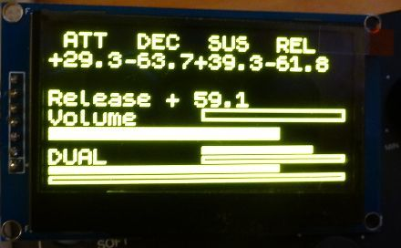

probably remove the resistor at the spi location and bridge the connection at the iic location...
SPI/I2C OLED display
Mindsetup
#183
I actually tried it. I also same time added the bridge between R8.
How to wire? I wired like this:
GND: power ground --> GND
VCC: --> VDD
D0: CLK clock (sdk/scl k) --> PB8
D1: MOSI data (sda) --> PB9
RST: reset --> VDD
DC: data/command --> GND
CS: chip select signal --> GND
But the screen stays black.
SmashedTransistors
#187
The SSD1309 is compatible with the SSD1306.
This 2"42 OLED needs to be modified for I2C : remove a resistor, add three straps, connect the DC pin to zero for @0x3C or 3v3 for @0x3D...
The RES (reset) pin is more tricky and i had to experiment quite a lot before having something on the screen. 
At the moment i use a little RC circuit so that the OLED display resets automatically on power up... but i think it needs some more experimentation to say if it is reliable enough. (without this RC the OLED does not work)
VDD
|
| | 10k
|
+----------+-------->Res pin
| |
----- 68nF | | 100k
----- |
| |
GND GNDHere are a 2.42" a 0.96" and a 1.3" displays.
{kind=link}
What should a standard metal enclosure look like?
SmashedTransistors
#189
I'm working on an object that will allow to display 8 lines of 21 characters...
Work in progress...

Mindsetup
#190
Is it possible to have a oled screen working with knobs so that when knob is turned the screen shows the value and string for the knob automatically, so it wouldn't need to have any buttons pushed. And after like 15sec when no knob is touched oled would show scope.
spacelordmother
#191
You can do that in the patch with objects -- knob turn to send a trig to the object to switch to that string and then a timer to switch back to "main" string page display.
I'm away from the patcher, sorry I don't have any more detailed object names 
ecleinjr
#194
Hey just a quick question about these connections. Did you just solder wires onto the Axocontrol board pins that were already soldered or are you running you wires from the axoloti pins underneath?
Mindsetup
#195
Can I show midi clock pulse on Oled somehow? Maybe just a blinking pixel on corner or something 
lokki
#196
just use the period "." for example. i did something like this. you will need a string mux, one input with an empty string, the other with the period. connect the midiclock output to the mux in via a pulselength object, so you can adjust how long the point is lit. i also made some concatenate objects for strings, so you can still display other things on that line.
as a sidenote, it will be more precise and easier to just have a tempo LED....
Mindsetup
#197
Anyone have any more precise tips how to do this:
"Is it possible to have a oled screen working with knobs so that when knob is turned the screen shows the value and string for the knob automatically, so it wouldn't need to have any buttons pushed. And after like 15sec when no knob is touched oled would show scope."
"You can do that in the patch with objects -- knob turn to send a trig to the object to switch to that string and then a timer to switch back to "main" string page display."
weasel79
#199
Hey i know i had this working before but i am currently egtting these errors on compiling in a very empty project... any idea @SmashedTransistors?
! /Users/blndr/Documents/axoloti/build/xpatch.h.gch
. /Users/blndr/Documents/axoloti/axoloti-contrib/objects/tiar/HW/tiar_font5x8.h
/Users/blndr/Documents/axoloti/build/xpatch.cpp: In member function 'void rootc::instanceOLED128x64__1::calcScopePage(int, uint8t*)':
/Users/blndr/Documents/axoloti/build/xpatch.cpp:340:27: error: 'class rootc' has no member named 'instance_i'
uint16_t y = ((parent->instance_i.t[i]+64)*3 )/8;
^
/Users/blndr/Documents/axoloti/build/xpatch.cpp: In member function 'void rootc::instanceOLED128x64__1::sendTextPage(int)':
/Users/blndr/Documents/axoloti/build/xpatch.cpp:388:21: error: 'class rootc' has no member named 'instance_i'
tY[i]=((parent->instance_i.t[i]+64)*3 )>>3;
^
make: *** [/Users/blndr/Documents/axoloti/build/xpatch.bin] Error 1
shell task failed, exit value: 2
Compiling patch failed ( untitled )
edit: nevermind. apparently this was because i had no tiar scope present in the project.
all working fine as expected from one of the GOATs, @SmashedTransistors
weasel79
#200
Hey @SmashedTransistors what do you think is a maximum realistic amount of OLED on one I2C line? i have some that can jumper-select adresses 0x3c/0x3d and some with 0x78/0x7a, if i change the aderesses in your object these should work right? or would this even work with one of these i2c expanders/multiplexers?
also does anybody have experience with adding several SPI devices? can i just use other GPIO digital pins as additional CS/SS pins for the same MOSI/MISO/SCLK?
SmashedTransistors
#201
Hi, i'm back form a short vacation
The 0x78/0x7a are actually the same addresses as 0x3c/0x3d (there is an implicit 0 low bit 0x78 <-> 0x3c).
The OLED thread is low priority compared to audio (flickers on the OLED are OK, clicks on the audio are not OK).
In my experience two OLEDs work well. But when a patch is heavy on the CPU, it will start to flicker: my code is aimed to scopes and tries to have a permanent refresh.
I did not experimented with these multiplexers yet. They would need some more coding.
If the goal is to display parameters, the refresh could be "on demand"... that would be a new - and optimized for that purpose - design.
But I think that the best solution for more advanced designs is to use an arduino due or a teensy so that you can use the extensive set of drivers and color displays and communicate with the axoloti by midi or uart.